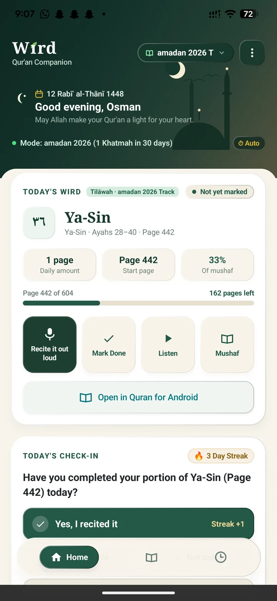
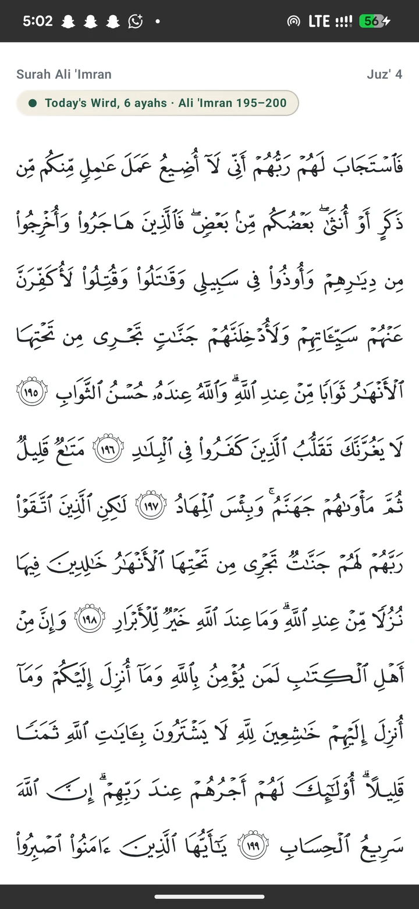
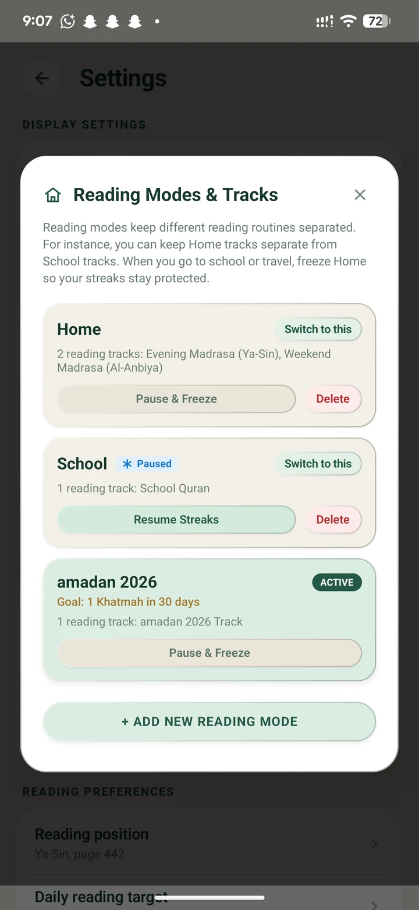
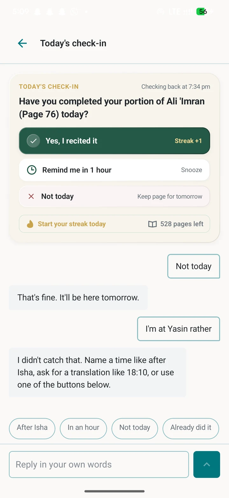
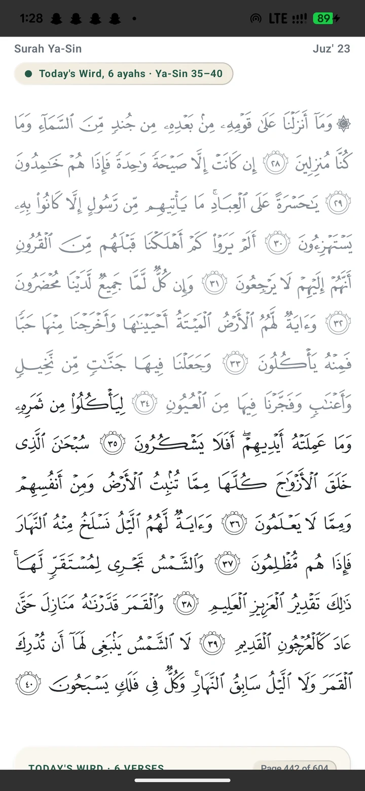

Wird guides your daily portion with the authentic Madani Mushaf, nudges you after prayer, audits your recitation word-for-word with on-device Whisper AI, and never scolds you with guilt.

Most Qur'an apps demand rigid one-juz targets, shame you when your streak breaks, and trap your worship behind constant internet requirements. Wird rebuilds your daily reading habit from the ground up.
No generic computer fonts. Every page is rendered with King Fahd Complex (QCF v1) glyphs. Your assigned portion glows with illuminated borders while surrounding ayahs dim gently.
Reminders anchor to real solar astronomy: 30 minutes after Maghrib or Isha. Computed entirely on your device with PrayTimes geometry. Zero external API calls, zero server tracking.
Check your recitation word-for-word without internet. Powered by whisper.cpp and Tarteel AI's Qur'anic model running natively on your phone. Private, instant, and data-bundle free.
Ask questions about Ayah meanings and Tafsir in plain English. Pause your streak when travelling with zero guilt. The companion speaks with warmth and never scolds.
Switch between Home Mode, School Mode, or Work Mode. When school or travel takes over, freeze your home tracks with one tap so streaks stay protected and adapt to where you are.
Honors how millions across West Africa memorized Qur'an. Choose standard forward recitation or reverse direction starting from Juz 'Amma back towards Al-Fatihah.
Wird distinguishes reciting aloud from tapping. Both are displayed side-by-side (e.g. 5 recited, 18 marked as read). Never fake a recitation, and never announce a streak of zero.
On tired or sick days, switch to the gentle listening escape hatch with Shaykh Abu Bakr al-Shatri. Cached locally with an LRU budget so it plays smoothly in airplane mode.
Glance widget shows today's portion and status directly on your Android launcher. Pushed only when data updates — zero background battery drain, surviving OEM killers.
Read Sūrah Al-Kahf on Friday freely from the 114 Sūrahs directory. Every Sūrah holds its own independent bookmark without resetting your daily wird pace.
Specific manufacturer guides for Tecno (HiOS), Infinix (XOS), itel, and Samsung. Detects when phone battery managers kill alarms and provides exact fix steps.
Export all your days, recordings, and reading logs into a clean, open `.zip` file with a readable JSON format and README. Your worship belongs to you, forever.
Take an interactive tour through Wird's actual screens. Click any scene below to jump straight to that superpower.




Tells you your exact page and verses. Scroll down to choose how you finish: recite aloud, listen, or mark done.
Real captures taken directly from the Pixel 6 Pro running the release build. Swipe or tap any thumbnail below.
Designed around human psychology and African student realities: small daily increments, solar prayer anchors, and outside accountability.
Commit to one page, half a page, or set lighter amounts on busy school days. Wird calculates your daily assignment automatically without floating-point drift.
Nudges fire when you are naturally available — 30 minutes after Maghrib or Isha. If you are busy, reply from the notification to postpone or pause streak guilt-free.
Opens straight to your illuminated portion in authentic QCF script. Surroundings dim so you never lose focus. Hear Shaykh Shatri's recitation on tired days.
Recite aloud and let on-device Whisper AI check your recitation word-for-word. Log days honestly as recited or marked without ever seeing a shaming streak of zero.
Whether you have ten spare minutes between lectures or two hours of dawn murāja'ah, Wird molds around your life without punitive guilt.
Built for university lectures, daily commutes, and unpredictable work hours. Never leaves you behind when life gets hectic.
Built for students of knowledge and Huffāz revising daily murāja'ah loops with strict word-for-word accuracy.
Built for believers completing the entire Qur'an with steady mindfulness and deep reflection.
Your recitation of the Qur'an is an act of intimate worship between you and your Creator. Wird is engineered with strict cryptographic and offline boundaries so your worship is never commodified, indexed, or synced to any cloud.
Get the Offline AppEverything you need to know about Wird's offline architecture, recitation checking, and reading modes.
Experience a peaceful, guilt-free Qur'an companion built for your real daily schedule. 100% offline, lightweight, and free.
Have an idea or spotted a bug on your device? Send feedback directly to Mutalib.